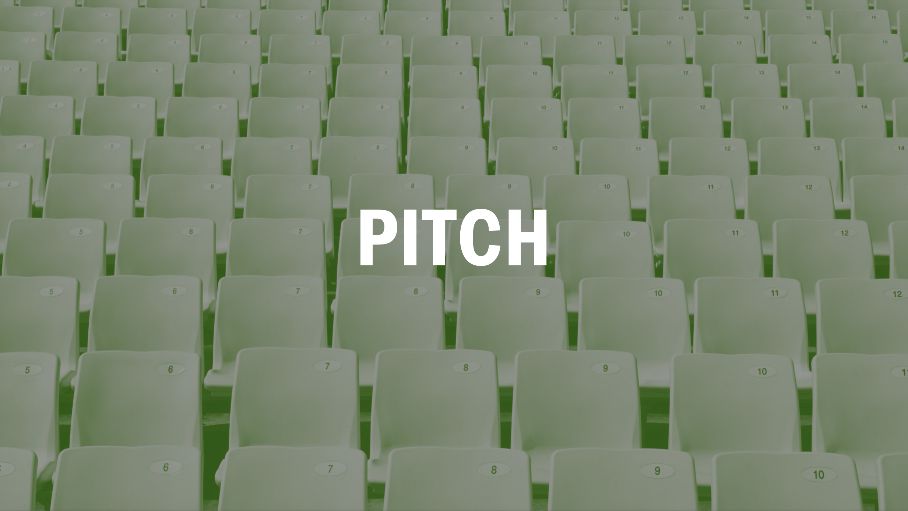
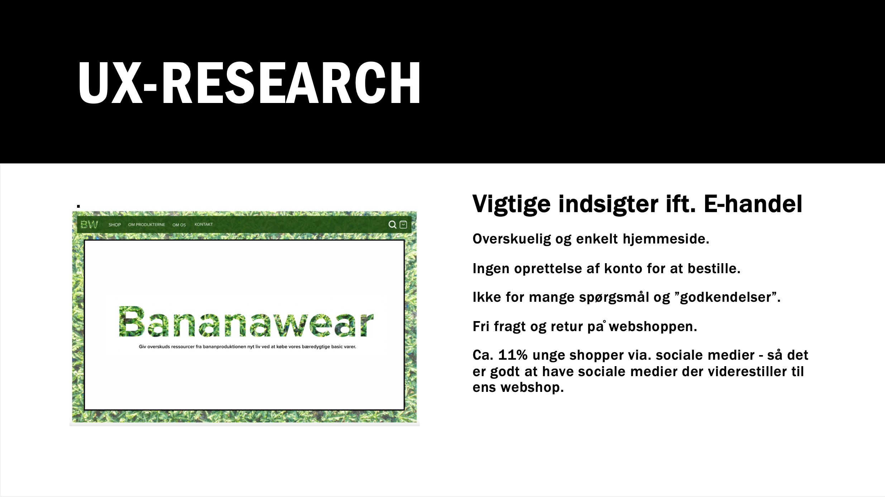

03.03.03 Pitch


Opgaven
Opgaven gik ud på at forberede et lille pitch på fem minutter som skulle præsenteres for mindre grupper, med det formål at øve og træne pitch og ligeledes få feedback på vores webshop-cases.
Procces
Jeg startede med at gennemgå de indsigter jeg havde fået ift. e-handel når min målgruppe handlede online. Dernæst præsenterede jeg min løsning og ide ved at fortælle om produkterne, min USP og vise den endelige XD-protoype.
Hvad jeg har lært
Jeg har lært at pitche og fået en struktur til hvordan man kan opbygge et pitch så det fanger opmærksonheden hos lytterene.